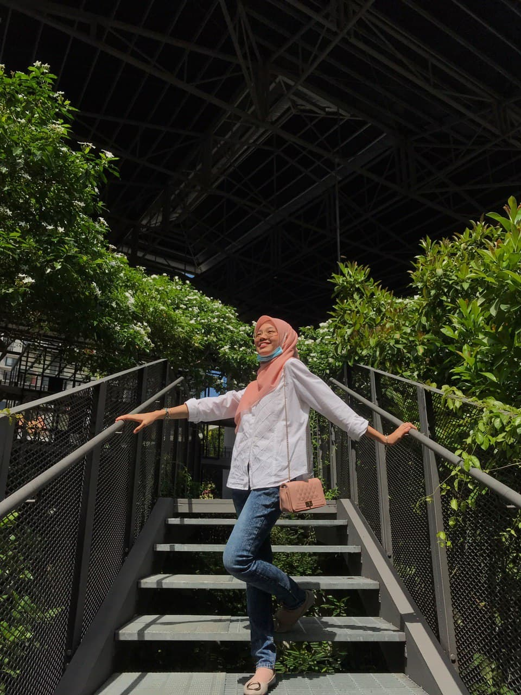
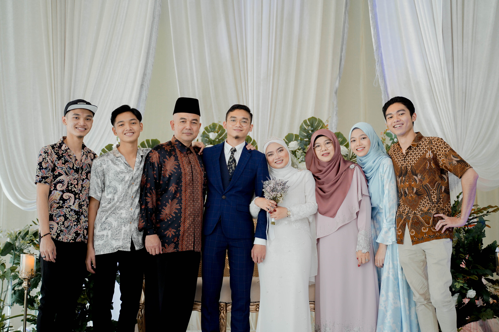
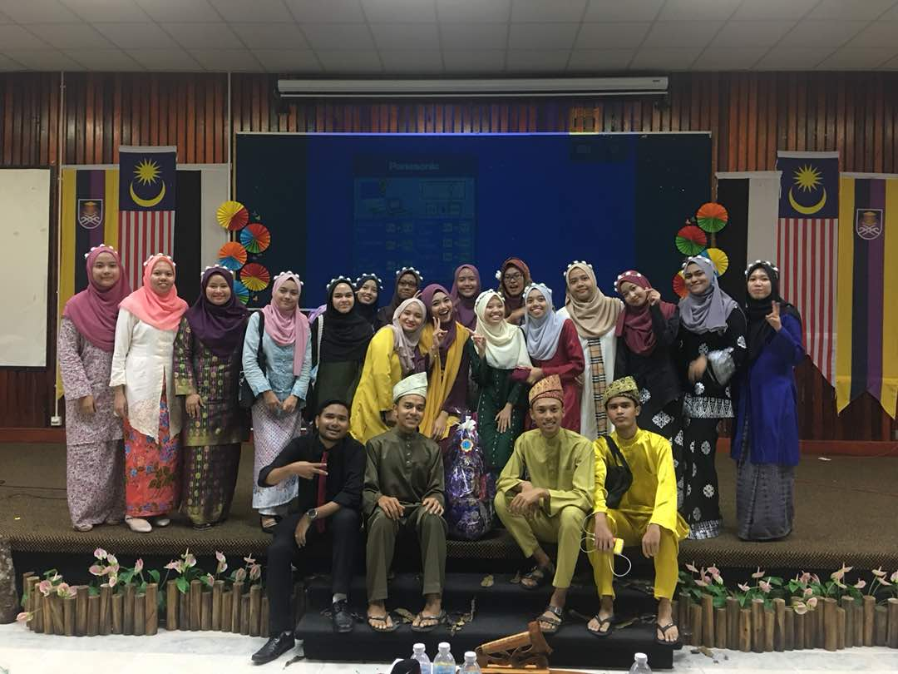
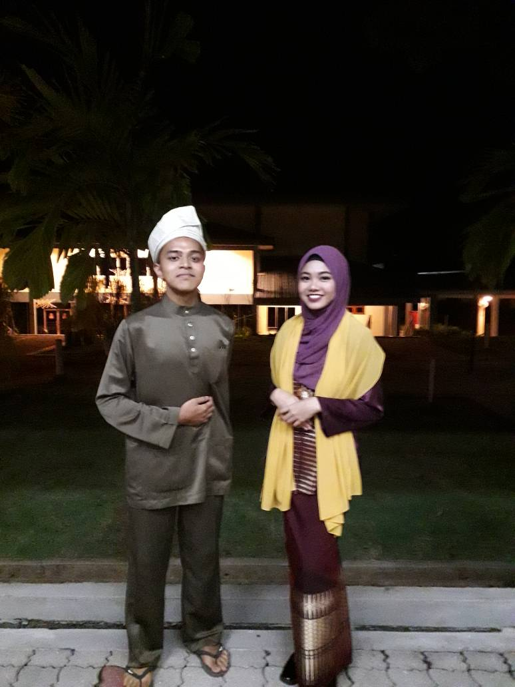
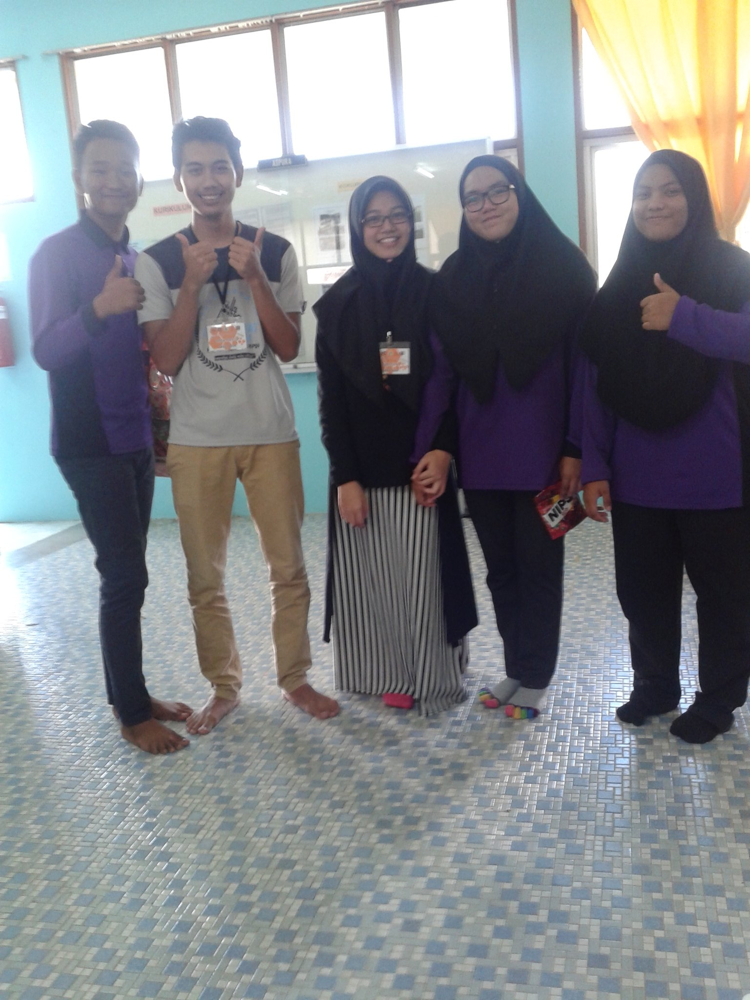

About Me
"Art and life really are the same, and both can only be about a spiritual journey, a path towards a re-union with a supreme creator, with god, with the divine; and this is true no matter how unlikely, how strange, how unorthodox, one’s particular life path might appear to one’s self or others at any given moment."

| 
| 
|  | 
|
|---|
Hye my name is Noor Amirah Amanina binti Noor Ariffin
Currently i'm living in Kuarters Pengarah Institut Latihan Perindustrian Pedas, Lot 3289, Jln Pedas Linggi, 71400 Pedas, Negeri Sembilan
I was born at Hospital Sultanah Aminah, Johor Bahru | 14 July 1999
I also a student of Bachelor in Office System Management (BA232) at UiTM Machang, Kelantan
Drawing and cooking is my passion but if only my mood turns to good
Part time being 'kakak' of 3 cats even they are fat and lazy but kakak love you all!
Family

| 
|  | 
|
|---|
My father's name is Noor Ariffin bin Muhd Ariff. Babah turn 54 years old this year since his birthday on 5 February 1966. He works under Jabatan Tenaga Manusia which is at Institut Latihan Perindustrian Pedas as a Director. He is my only babah and my first hero in my life since I'm only daughter in my family. I wish I could repay all the sacrifices he has made since I was a baby and was able to make him feel proud of my success
I have a superwoman and a loving person mom named Khamsasiah binti Mhd Amin. Her name could make me proud as her daughter because her strength as a mother is beyond the reach of the minds of every one of her children. Ibu's birthday is on 8 July 1971 which is she already in 49 years old and full time housewife for her beloved husband. Without both my parents, I would not be able to continue studying until this degree.
This is my eldest brother, my only one abanglong, Muhammad Amirul Ikwal bin Noor Ariffin. He just married her schoolmate, Kak Wawa on August 31 last month. He was born on 02 January 1994 at Hospital Besar Kuala Lumpur. Now he works in Klang as an engineer in a private company.
I also have second brother which is abangah, Muhammad Aiman Farahi bin Noor Ariffin. He was born on 18 June 1997 at Hospital Playmouth, United Kingdom. He had just graduated from uia in an architecture course. Supposed to be, he already get a job, but during this pandemic his desire to work was nullified and just stay at home until I don't know when hahahahhha. I wish he get a job as soon as possible and continue with his passion as an architect
Yeah I am the third and the only one girl in my siblings. Being an only girl in my family sometimes its seems better, but sometimes not because of course I need to do the housework alone but Allah is a omnipotent and omniscient. Being a daughter can make me special like I don't need to compare with other siblings about my character, face or even my attire because it is absolutely different. So right now I'm living in happy surrounding with a positive and healthy family.
Get to know my forth brother, Muhammad Amir Farhan bin Noor Ariffin. We usually called him as Amir and now he is 19 years old. He was born on 12 September 2001 at Hospital Putrajaya. Now, he is a student at Institut Latihan Perindustrian Bukit Katil, Melaka as an electrical currently in 2nd semester. During this pandemic, I think he already forgot he is an electrical boy because 24 hour I can watched him playing a game until midnight that's why he still single right now but I wish him all the best in his life.
And lastly, the only one and matured adik in this world named Muhammad Ariff Fahim bin Noor Ariffin. He is 15 years old right now and a student in Sekolah Menengah Sains Rembau. He was born on 03 February 2005 in Hospital Kajang. He is a korean boy because from dawn until dusk I could see him watching Kdrama with a huge feeling and nobody cannot disturb him but one thing I suspicious about him, even he is a Kdrama fans but he still perform on his final exam. Therefore, it is miracle for me as his sister.
Education
Knowledge is power. Information is liberating. Education is the premise of progress, in every society, in every family
Kindergarten
Tadika Sri Bestari Ceria, Selangor
I started studying when I was 5 years old in 2004. At that time, I was in the state of Selangor and moved to another kindergarten in 2005.
Primary school
SK Seri Sentosa, Nibong Tebal (2006-2007), SK Taman Tasik Kesuma, Beranang, Selangor (Jan-Mac 2008), SK Tebobon, Kota Kinabalu, Sabah (May 2008-May 2010), SK Pedas, Negeri Sembilan ( June 2010-Nov 2011)
I went through various experiences in a new place as I moved around following my family for work. As a new student, I was a little scared to face other friends but they were very kind and accepted me as their classmate. I also get a lot of benefits of moving around because I can speak using many accents.
Secondary school
Sekolah Menengah Kebangsaan Datuk Abdullah (2012-2016)
I was a religious student (KAA class) while in form 1 until form 3. With my PT3 results, I entered the literary stream while in form 4 until form 5 and got a SPM result in 2017 with 3A 3B 2C
Diploma
Universiti Teknologi Mara Jengka, Cawangan Pahang (UiTM Jengka 2018-2020)
I am a student of Diploma in Office Management and Technology. There are 5 semester in 2 years 6 months. I have successfully completed my diploma and I am now pursuing a degree.

Degree
Universiti Teknologi Mara Machang, Cawangan Kelantan (UiTM Machang 2020-Now)
Currently I is a degree student in Bachelor of Office System and there are only 6 semester in 2 years 6 months only as I am a application students from Diploma in Office Management and Technology in Uitm Jengka.

Experience
“Don't let the expectations and opinions of other people affect your decisions. It's your life, not theirs. Do what matters most to you; do what makes you feel alive and happy. Don't let the expectations and ideas of others limit who you are. If you let others tell you who you are, you are living their reality — not yours. There is more to life than pleasing people. There is much more to life than following others' prescribed path. There is so much more to life than what you experience right now. You need to decide who you are for yourself. Become a whole being. Adventure.”
|  | 
|  | 
| 
| 
|
|---|
While I was in semester 1 at Uitm Jengka, my classmates and I were involved in theater at OMSA Junior's Night event. Before the ceremony, we have made the preparation and rehearsal of the theater with full enthusiasm as this is our first performance in UiTM Jengka as new students. We have chosen the Gunung Ledang theater as our acting to be presented to other students.
On the day of the incident, everyone was focused on our acting which is very soulful of the character especially me who holds the main character as 'Gusti Puteri' a princess who is on the ledang mountain waiting for her lover. I did not expect, my acting as the main character succeeded with the sweat points that were given during the training and the acting of my friends who enlivened the character even more to the character Hang Tuah, Sultan melaka, Embuk, Tun Teja and others. most surprising to us, that night our class was announced as theatrical champions.
|  | 
| 
| 
|
|---|
I also volunteered to be the facilitator of a program called Strive Towards Dakwah (STOD) at a secondary school in Rembau. The program runs for 3 days and two nights with very beneficial activities to be held for school students. The objective of this program is to strengthen the brotherhood of the hostel students to help each other and remind themselves of God and give a little knowledge about da'wah. Students in this school are also very friendly and cheerful during the activities.
Gallery
"Sing like no one’s listening, love like you’ve never been hurt, dance like nobody’s watching, and live like it’s heaven on earth."
"Being a family means you are a part of something very wonderful. It means you will love and be loved for the rest of your life."
"To the outside world, we all grow old. But not to brothers and sisters. We know each other as we always were, we know each other’s hearts, we share private family jokes. We remember family feuds and secrets, family griefs and joys."
"If my heart was a canvas, every square inch of it would be painted over with you."
"As we grow up, we realize it becomes less important to have a ton of friends, and more important to have real ones."
"Though miles may lie between us, we’re never far apart, for friendship doesn’t count the miles, it’s measured by the heart."
Contact Info

Phone
+6011-11508415
+6011-30897298


Adress
Kuarters Pengarah Institut Latihan Perindustrian Pedas,
Lot 3289, Jln Pedas Linggi
71400 Pedas, Negeri Sembilan